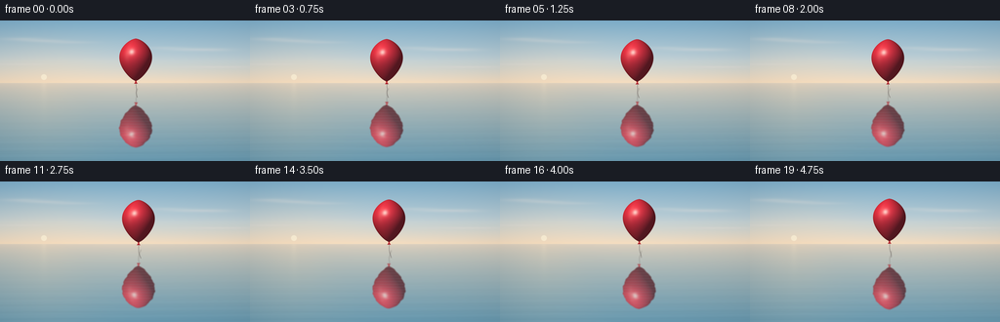
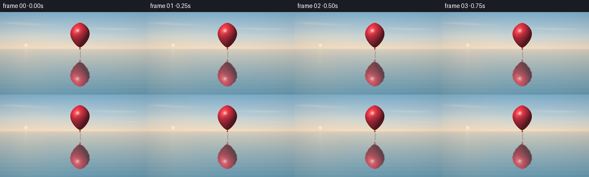

CODING AGENTS AS PIXEL WORLD MODELS
traex/GPT-6.1-Sol · phygen_060
点击播放 · 原生 RGB 像素
逐轮保存的候选
回放视频、检查图与代码变化。
每份候选均可单独播放。实际图片检查记录在下方工具轨迹中。
候选 01播放与检查图
点击播放 · 原生 RGB 像素


展开代码变化
--- 上一保存版本
+++ 本次保存版本
@@ -0,0 +1,178 @@
+"""Deterministic, supersampled RGB rendering of a balloon over a still ocean."""
+from pathlib import Path
+import json
+import numpy as np
+from PIL import Image, ImageDraw, ImageFilter
+import artifact_io
+
+ROOT = Path(__file__).resolve().parent
+SPEC = json.loads((ROOT / 'task_spec.json').read_text())
+W, H = SPEC['width'], SPEC['height']
+S = 4
+WW, HH = W*S, H*S
+Y, X = np.mgrid[0:HH, 0:WW].astype(np.float32)
+X = (X+.5)/S
+Y = (Y+.5)/S
+HORIZON = 64.0
+
+def mix(a,b,f):
+ return a*(1-f[...,None])+b*f[...,None]
+
+def environment(t):
+ # Air and sea share a low-frequency environment, but the water is slightly
+ # cooler and darker: the whole surface is a gently undulating mirror.
+ u = np.clip(Y/HORIZON,0,1)
+ top = np.array([125.,174.,203.])
+ mid = np.array([193.,210.,216.])
+ low = np.array([246.,221.,191.])
+ sky = mix(top,mid,np.minimum(u/.65,1))
+ sky = mix(sky,low,np.clip((u-.54)/.46,0,1)**1.5)
+ glow = np.exp(-((X-47)/74)**2-((Y-57)/35)**2)
+ sky = mix(sky,np.array([255.,225.,190.]),glow*.28)
+ # Translucent, unhurried cirrus, with no sharp cartoon cloud outlines.
+ c = np.zeros_like(X)
+ for cx,cy,sx,sy,a in [(23,19,21,1.7,.21),(46,20.8,22,1.4,.20),
+ (71,22.4,24,1.4,.15),(170,28,21,1.4,.14),
+ (194,29.8,24,1.6,.21),(219,30,20,1.8,.17),
+ (226,47.6,37,1.0,.17),(18,44.8,31,1.0,.12)]:
+ c += a*np.exp(-((X-cx-t*.025)/sx)**2-((Y-cy)/sy)**2)
+ sky=mix(sky,np.array([247.,234.,225.]),np.clip(c,0,.37))
+ # A small, hazy rising sun gives the ocean a quiet warm light.
+ sr=np.sqrt((X-45)**2+(Y-58.0)**2)
+ sun=np.clip((3.1-sr)*S,0,1)*.7
+ sky=mix(sky,np.array([255.,245.,218.]),sun)
+ d=np.maximum(Y-HORIZON,0)
+ v=np.clip(d/(H-HORIZON),0,1)
+ water=mix(np.array([224.,209.,190.]),np.array([104.,154.,177.]),v**.72)
+ warmth=np.exp(-((X-45)/(23+d*.53))**2)*np.exp(-d/103)*.17
+ water=mix(water,np.array([244.,218.,184.]),warmth)
+ # Long, very low waves, increasingly visible near the camera.
+ wav=(np.sin(d*.86+.34*np.sin(X*.033)+t*.36)
+ +.42*np.sin(d*1.78+X*.019-t*.40)
+ +.28*np.sin(d*3.1+.42*np.sin(X*.063)+t*.47))
+ water+=wav[...,None]*(.10+v**1.7*1.65)[...,None]*np.array([.9,1.,1.])
+ # Small horizontal streaks provide a water cue without breaking the mirror.
+ rng=np.random.default_rng(21)
+ for _ in range(85):
+ cy=rng.uniform(67,145)
+ cx=rng.uniform(-20,276)
+ length=rng.uniform(3,19)*(0.45+(cy-64)/90)
+ thick=rng.uniform(.09,.19)*(0.6+(cy-64)/80)
+ amp=rng.uniform(-1.8,2.3)*((cy-64)/80)**.7
+ line=np.exp(-((Y-cy-.075*np.sin(t*.45+cx))/thick)**2-((X-cx)/length)**6)
+ water+=line[...,None]*amp
+ # Very soft light reflected beneath the low sun, not a choppy sparkle path.
+ path=np.exp(-((X-45)/(2.6+d*.058))**2)*np.exp(-d/25)
+ ribbon=.35+.65*(.5+.5*np.sin(d*3.7+t*.35))**8
+ water+=path[...,None]*ribbon[...,None]*np.array([12.,10.,6.])
+ scene=np.where((Y>=HORIZON)[...,None],water,sky)
+ # An almost imperceptible atmospheric horizon.
+ haze=np.exp(-((Y-HORIZON)/.52)**2)*.22
+ scene=mix(scene,np.array([233.,220.,201.]),haze)
+ return scene
+
+def balloon(t):
+ cx=139.0+3.8*np.sin(t*.30)
+ cy=39.9+.95*np.sin(t*.76+.3)
+ bh=43.3
+ top=cy-bh/2
+ u=np.clip((Y-top)/bh,.0001,.9999)
+ radial=17.0*np.sin(np.pi*u)**.62*(1.16-.35*u)
+ # Surface of revolution and its actual normals, not a flat painted ellipse.
+ deriv=radial*(.62*np.pi/np.tan(np.pi*u)-.35/(1.16-.35*u))/bh
+ q=(X-cx)/radial
+ z=np.sqrt(np.maximum(1-q*q,0))
+ norm=np.sqrt(1+deriv*deriv)
+ nx=q/norm
+ ny=-deriv/norm
+ nz=z/norm
+ alpha=np.clip((radial-np.abs(X-cx))*S,0,1)
+ alpha*=((Y>=top)&(Y<=top+bh))
+ L=np.array([-.48,-.64,.70]); L/=np.linalg.norm(L)
+ diffuse=np.maximum(nx*L[0]+ny*L[1]+nz*L[2],0)
+ base=np.array([223.,40.,52.])
+ color=base[None,None,:]*(.32+.68*diffuse[...,None])
+ color+=np.array([14.,14.,20.])*(.35+.65*nz[...,None])
+ # Warm wrap light, faint latex translucence, and dark maroon right edge.
+ transmitted=np.maximum(-nx*.65+ny*.25,0)*(1-nz)*.30
+ color+=transmitted[...,None]*np.array([71.,15.,8.])
+ halfway=L+np.array([0.,0.,1.]); halfway/=np.linalg.norm(halfway)
+ nh=np.clip(nx*halfway[0]+ny*halfway[1]+nz*halfway[2],0,1)
+ spec=nh**65
+ broad=nh**12
+ color+=broad[...,None]*np.array([31.,19.,17.])
+ color=mix(color,np.array([255.,238.,224.]),spec*.81)
+ # Broader reflection of the luminous sky above the balloon.
+ soft=np.exp(-((q+.53)/.15)**2-((u-.33)/.17)**2)
+ color=mix(color,np.array([255.,196.,176.]),soft*.18)
+ # Fine tied neck and naturally curving thread, rendered as an RGBA layer.
+ detail=Image.new('RGBA',(WW,HH),(0,0,0,0))
+ dr=ImageDraw.Draw(detail)
+ bottom=top+bh
+ knot=[(cx-.9,bottom-.5),(cx+.8,bottom-.5),(cx+.55,bottom+1.2),
+ (cx+1.7,bottom+2.7),(cx-1.7,bottom+2.7),(cx-.5,bottom+1.2)]
+ dr.polygon([(round(x*S),round(y*S)) for x,y in knot],fill=(175,32,42,255))
+ dr.line([(round((cx-.35)*S),round((bottom+.65)*S)),
+ (round((cx+.7)*S),round((bottom+.8)*S))],fill=(244,106,96,255),width=2)
+ pts=[]
+ for qv in np.linspace(0,1,100):
+ sy=bottom+2.6+14.0*qv
+ sx=cx+.7*np.sin(qv*6.0+t*.7)*qv+1.6*qv*qv
+ pts.append((round(sx*S),round(sy*S)))
+ dr.line(pts,fill=(122,117,112,210),width=2)
+ da=np.asarray(detail).astype(np.float32)/255
+ # Thread should fall behind the solid latex balloon.
+ totalalpha=alpha+da[:,:,3]*(1-alpha)
+ out=(color*alpha[...,None]+da[:,:,:3]*255*da[:,:,3,None]*(1-alpha[...,None]))
+ out/=np.maximum(totalalpha[...,None],1e-6)
+ return out,totalalpha
+
+def sample(src,xx,yy):
+ # Bilinear lookup enables subpixel waves in the reflection.
+ xx=np.clip(xx*S-.5,0,WW-1.001)
+ yy=np.clip(yy*S-.5,0,HH-1.001)
+ ix=xx.astype(np.int32); iy=yy.astype(np.int32)
+ fx=xx-ix; fy=yy-iy
+ if src.ndim==3:
+ fx=fx[...,None];fy=fy[...,None]
+ return ((src[iy,ix]*(1-fx)+src[iy,ix+1]*fx)*(1-fy)+
+ (src[iy+1,ix]*(1-fx)+src[iy+1,ix+1]*fx)*fy)
+
+def frame(i):
+ t=i/SPEC['fps']
+ bg=environment(t)
+ obj,opacity=balloon(t)
+ # The balloon and its virtual image have the same movement and an inverted
+ # vertical displacement. The unseen foot of its vertical is at y=74.4.
+ foot=74.4
+ depth=np.maximum(Y-HORIZON,0)
+ warp=(.32*np.sin(depth*.85+t*.46)+.17*np.sin(depth*1.67-t*.39))
+ warp*=np.clip(depth/30,0,1)
+ rx=X+warp
+ ry=2*foot-Y+.16*np.sin(depth*.91+t*.45)
+ refl=sample(obj*opacity[...,None],rx,ry)
+ ra=sample(opacity,rx,ry)
+ # Just enough softness and rippling to distinguish water from a glass pane.
+ prem=Image.fromarray(np.uint8(np.clip(refl,0,255))).filter(ImageFilter.GaussianBlur(.43*S))
+ raim=Image.fromarray(np.uint8(np.clip(ra*255,0,255))).filter(ImageFilter.GaussianBlur(.43*S))
+ refl=np.asarray(prem).astype(np.float32)
+ ra=np.asarray(raim).astype(np.float32)/255
+ wet=(Y>HORIZON).astype(np.float32)
+ reflectivity=.77-.06*np.clip(depth/80,0,1)
+ # Water's slight tint remains visible through the reflection.
+ strength=reflectivity*wet*(.97+.03*np.sin(depth*2.2+t*.5))
+ bg=bg*(1-ra[...,None]*strength[...,None])+refl*strength[...,None]
+ bg=bg*(1-opacity[...,None])+obj*opacity[...,None]
+ # A soft, photographic lens vignette, never a visible border.
+ vign=1-.045*((X-W/2)/(W/2))**2-.018*((Y-H/2)/(H/2))**2
+ bg*=vign[...,None]
+ img=Image.fromarray(np.uint8(np.clip(bg,0,255)))
+ return np.asarray(img.resize((W,H),Image.Resampling.LANCZOS))
+
+def main():
+ frames=np.stack([frame(i) for i in range(SPEC['frames'])])
+ artifact_io.save(frames,ROOT)
+ print(f'Saved {len(frames)} RGB frames, {W}x{H}, {SPEC["fps"]} fps to {ROOT}')
+
+if __name__=='__main__':
+ main()
可观测工具轨迹
实际执行的命令与返回图片。
命令 1exit 0
/bin/bash -lc 'ls -la && cat prompt.txt && cat GENERATION_RULES.md && cat task_spec.json'
命令 2exit 0
/bin/bash -lc 'cat artifact_io.py && cat player_template.html'
命令 3exit 0
/bin/bash -lc 'command -v ffmpeg || true'
命令 4exit 0
/bin/bash -lc "cat > generate.py <<'PY'
\"\"\"Deterministic, supersampled RGB rendering of a balloon over a still ocean.\"\"\"
from pathlib import Path
import json
import numpy as np
from PIL import Image, ImageDraw, ImageFilter
import artifact_io
ROOT = Path(__file__).resolve().parent
SPEC = json.loads((ROOT / 'task_spec.json').read_text())
W, H = SPEC['width'], SPEC['height']
S = 4
WW, HH = W*S, H*S
Y, X = np.mgrid[0:HH, 0:WW].astype(np.float32)
X = (X+.5)/S
Y = (Y+.5)/S
HORIZON = 64.0
def mix(a,b,f):
return a*(1-f[...,None])+b*f[...,None]
def environment(t):
# Air and sea share a low-frequency environment, but the water is slightly
# cooler and darker: the whole surface is a gently undulating mirror.
u = np.clip(Y/HORIZON,0,1)
top = np.array([125.,174.,203.])
mid = np.array([193.,210.,216.])
low = np.array([246.,221.,191.])
sky = mix(top,mid,np.minimum(u/.65,1))
sky = mix(sky,low,np.clip((u-.54)/.46,0,1)**1.5)
glow = np.exp(-((X-47)/74)**2-((Y-57)/35)**2)
sky = mix(sky,np.array([255.,225.,190.]),glow*.28)
# Translucent, unhurried cirrus, with no sharp cartoon cloud outlines.
c = np.zeros_like(X)
for cx,cy,sx,sy,a in [(23,19,21,1.7,.21),(46,20.8,22,1.4,.20),
(71,22.4,24,1.4,.15),(170,28,21,1.4,.14),
(194,29.8,24,1.6,.21),(219,30,20,1.8,.17),
(226,47.6,37,1.0,.17),(18,44.8,31,1.0,.12)]:
c += a*np.exp(-((X-cx-t*.025)/sx)**2-((Y-cy)/sy)**2)
sky=mix(sky,np.array([247.,234.,225.]),np.clip(c,0,.37))
# A small, hazy rising sun gives the ocean a quiet warm light.
sr=np.sqrt((X-45)**2+(Y-58.0)**2)
sun=np.clip((3.1-sr)*S,0,1)*.7
sky=mix(sky,np.array([255.,245.,218.]),sun)
d=np.maximum(Y-HORIZON,0)
v=np.clip(d/(H-HORIZON),0,1)
water=mix(np.array([224.,209.,190.]),np.array([104.,154.,177.]),v**.72)
warmth=np.exp(-((X-45)/(23+d*.53))**2)*np.exp(-d/103)*.17
water=mix(water,np.array([244.,218.,184.]),warmth)
# Long, very low waves, increasingly visible near the camera.
wav=(np.sin(d*.86+.34*np.sin(X*.033)+t*.36)
+.42*np.sin(d*1.78+X*.019-t*.40)
+.28*np.sin(d*3.1+.42*np.sin(X*.063)+t*.47))
water+=wav[...,None]*(.10+v**1.7*1.65)[...,None]*np.array([.9,1.,1.])
# Small horizontal streaks provide a water cue without breaking the mirror.
rng=np.random.default_rng(21)
for _ in range(85):
cy=rng.uniform(67,145)
cx=rng.uniform(-20,276)
length=rng.uniform(3,19)*(0.45+(cy-64)/90)
thick=rng.uniform(.09,.19)*(0.6+(cy-64)/80)
amp=rng.uniform(-1.8,2.3)*((cy-64)/80)**.7
line=np.exp(-((Y-cy-.075*np.sin(t*.45+cx))/thick)**2-((X-cx)/length)**6)
water+=line[...,None]*amp
# Very soft light reflected beneath the low sun, not a choppy sparkle path.
path=np.exp(-((X-45)/(2.6+d*.058))**2)*np.exp(-d/25)
ribbon=.35+.65*(.5+.5*np.sin(d*3.7+t*.35))**8
water+=path[...,None]*ribbon[...,None]*np.array([12.,10.,6.])
scene=np.where((Y>=HORIZON)[...,None],water,sky)
# An almost imperceptible atmospheric horizon.
haze=np.exp(-((Y-HORIZON)/.52)**2)*.22
scene=mix(scene,np.array([233.,220.,201.]),haze)
return scene
def balloon(t):
cx=139.0+3.8*np.sin(t*.30)
cy=39.9+.95*np.sin(t*.76+.3)
bh=43.3
top=cy-bh/2
u=np.clip((Y-top)/bh,.0001,.9999)
radial=17.0*np.sin(np.pi*u)**.62*(1.16-.35*u)
# Surface of revolution and its actual normals, not a flat painted ellipse.
deriv=radial*(.62*np.pi/np.tan(np.pi*u)-.35/(1.16-.35*u))/bh
q=(X-cx)/radial
z=np.sqrt(np.maximum(1-q*q,0))
norm=np.sqrt(1+deriv*deriv)
nx=q/norm
ny=-deriv/norm
nz=z/norm
alpha=np.clip((radial-np.abs(X-cx))*S,0,1)
alpha*=((Y>=top)&(Y<=top+bh))
L=np.array([-.48,-.64,.70]); L/=np.linalg.norm(L)
diffuse=np.maximum(nx*L[0]+ny*L[1]+nz*L[2],0)
base=np.array([223.,40.,52.])
color=base[None,None,:]*(.32+.68*diffuse[...,None])
color+=np.array([14.,14.,20.])*(.35+.65*nz[...,None])
# Warm wrap light, faint latex translucence, and dark maroon right edge.
transmitted=np.maximum(-nx*.65+ny*.25,0)*(1-nz)*.30
color+=transmitted[...,None]*np.array([71.,15.,8.])
halfway=L+np.array([0.,0.,1.]); halfway/=np.linalg.norm(halfway)
nh=np.clip(nx*halfway[0]+ny*halfway[1]+nz*halfway[2],0,1)
spec=nh**65
broad=nh**12
color+=broad[...,None]*np.array([31.,19.,17.])
color=mix(color,np.array([255.,238.,224.]),spec*.81)
# Broader reflection of the luminous sky above the balloon.
soft=np.exp(-((q+.53)/.15)**2-((u-.33)/.17)**2)
color=mix(color,np.array([255.,196.,176.]),soft*.18)
# Fine tied neck and naturally curving thread, rendered as an RGBA layer.
detail=Image.new('RGBA',(WW,HH),(0,0,0,0))
dr=ImageDraw.Draw(detail)
bottom=top+bh
knot=[(cx-.9,bottom-.5),(cx+.8,bottom-.5),(cx+.55,bottom+1.2),
(cx+1.7,bottom+2.7),(cx-1.7,bottom+2.7),(cx-.5,bottom+1.2)]
dr.polygon([(round(x*S),round(y*S)) for x,y in knot],fill=(175,32,42,255))
dr.line([(round((cx-.35)*S),round((bottom+.65)*S)),
(round((cx+.7)*S),round((bottom+.8)*S))],fill=(244,106,96,255),width=2)
pts=[]
for qv in np.linspace(0,1,100):
sy=bottom+2.6+14.0*qv
sx=cx+.7*np.sin(qv*6.0+t*.7)*qv+1.6*qv*qv
pts.append((round(sx*S),round(sy*S)))
dr.line(pts,fill=(122,117,112,210),width=2)
da=np.asarray(detail).astype(np.float32)/255
# Thread should fall behind the solid latex balloon.
totalalpha=alpha+da[:,:,3]*(1-alpha)
out=(color*alpha[...,None]+da[:,:,:3]*255*da[:,:,3,None]*(1-alpha[...,None]))
out/=np.maximum(totalalpha[...,None],1e-6)
return out,totalalpha
def sample(src,xx,yy):
# Bilinear lookup enables subpixel waves in the reflection.
xx=np.clip(xx*S-.5,0,WW-1.001)
yy=np.clip(yy*S-.5,0,HH-1.001)
ix=xx.astype(np.int32); iy=yy.astype(np.int32)
fx=xx-ix; fy=yy-iy
if src.ndim==3:
fx=fx[...,None];fy=fy[...,None]
return ((src[iy,ix]*(1-fx)+src[iy,ix+1]*fx)*(1-fy)+
(src[iy+1,ix]*(1-fx)+src[iy+1,ix+1]*fx)*fy)
def frame(i):
t=i/SPEC['fps']
bg=environment(t)
obj,opacity=balloon(t)
# The balloon and its virtual image have the same movement and an inverted
# vertical displacement. The unseen foot of its vertical is at y=74.4.
foot=74.4
depth=np.maximum(Y-HORIZON,0)
warp=(.32*np.sin(depth*.85+t*.46)+.17*np.sin(depth*1.67-t*.39))
warp*=np.clip(depth/30,0,1)
rx=X+warp
ry=2*foot-Y+.16*np.sin(depth*.91+t*.45)
refl=sample(obj*opacity[...,None],rx,ry)
ra=sample(opacity,rx,ry)
# Just enough softness and rippling to distinguish water from a glass pane.
prem=Image.fromarray(np.uint8(np.clip(refl,0,255))).filter(ImageFilter.GaussianBlur(.43*S))
raim=Image.fromarray(np.uint8(np.clip(ra*255,0,255))).filter(ImageFilter.GaussianBlur(.43*S))
refl=np.asarray(prem).astype(np.float32)
ra=np.asarray(raim).astype(np.float32)/255
wet=(Y>HORIZON).astype(np.float32)
reflectivity=.77-.06*np.clip(depth/80,0,1)
# Water's slight tint remains visible through the reflection.
strength=reflectivity*wet*(.97+.03*np.sin(depth*2.2+t*.5))
bg=bg*(1-ra[...,None]*strength[...,None])+refl*strength[...,None]
bg=bg*(1-opacity[...,None])+obj*opacity[...,None]
# A soft, photographic lens vignette, never a visible border.
vign=1-.045*((X-W/2)/(W/2))**2-.018*((Y-H/2)/(H/2))**2
bg*=vign[...,None]
img=Image.fromarray(np.uint8(np.clip(bg,0,255)))
return np.asarray(img.resize((W,H),Image.Resampling.LANCZOS))
def main():
frames=np.stack([frame(i) for i in range(SPEC['frames'])])
artifact_io.save(frames,ROOT)
print(f'Saved {len(frames)} RGB frames, {W}x{H}, {SPEC[\"fps\"]} fps to {ROOT}')
if __name__=='__main__':
main()
PY
python generate.py"命令 5exit 0
/bin/bash -lc "python - <<'PY'
from pathlib import Path
import numpy as np
from PIL import Image
p=np.load('pixels.npz')['pixels']
assert p.shape==(144,256,20)
fs=sorted(Path('frames').glob('*.png'))
assert len(fs)==20
assert all(Image.open(f).mode=='RGB' and Image.open(f).size==(256,144) for f in fs)
assert Path('index.html').stat().st_size>0
f=np.stack([np.asarray(Image.open(q)) for q in fs])
print('Verified: 20 RGB frames at 256Ã144; packed tensor and HTML player exist.')
print('Frame-to-frame mean RGB difference:', np.abs(np.diff(f.astype(float),axis=0)).mean().round(3))
print('Files:', ', '.join(str(q) for q in [Path('generate.py'),Path('pixels.npz'),Path('index.html'),Path('inspection.png')]))
PY"保存候选 1 份；完成命令 5 次；可验证图片返回 0 张。原始 API 响应与完整日志保留在本地。